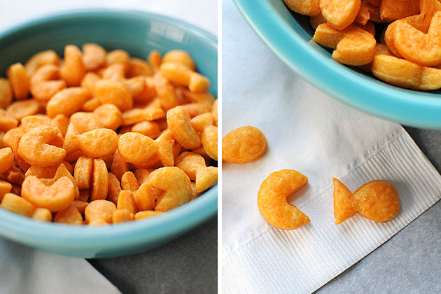
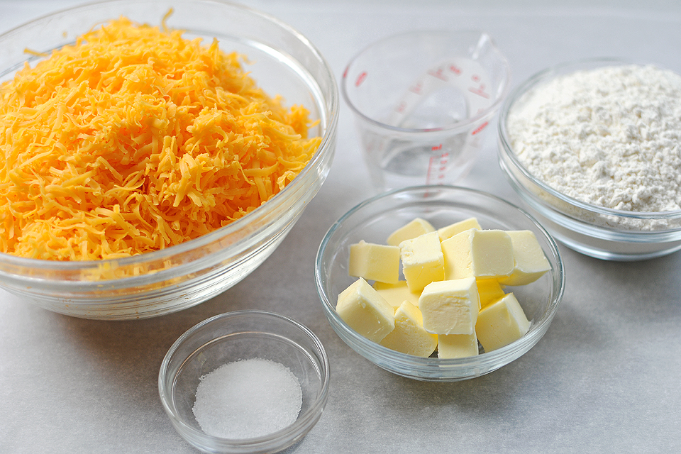
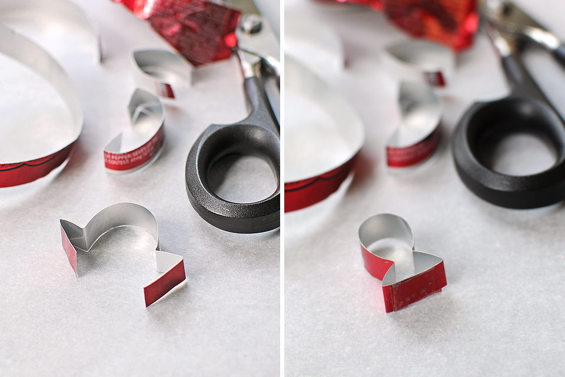
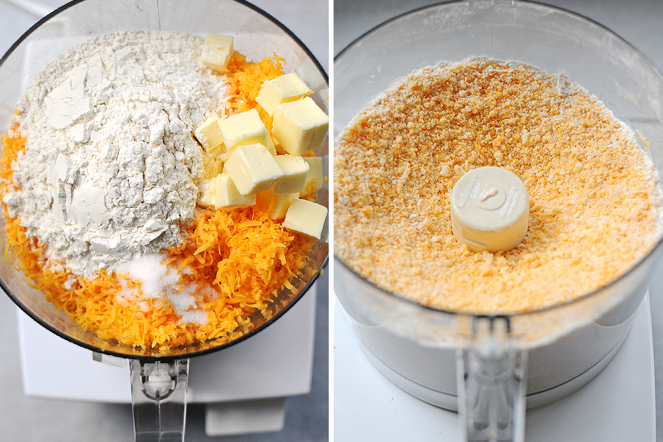
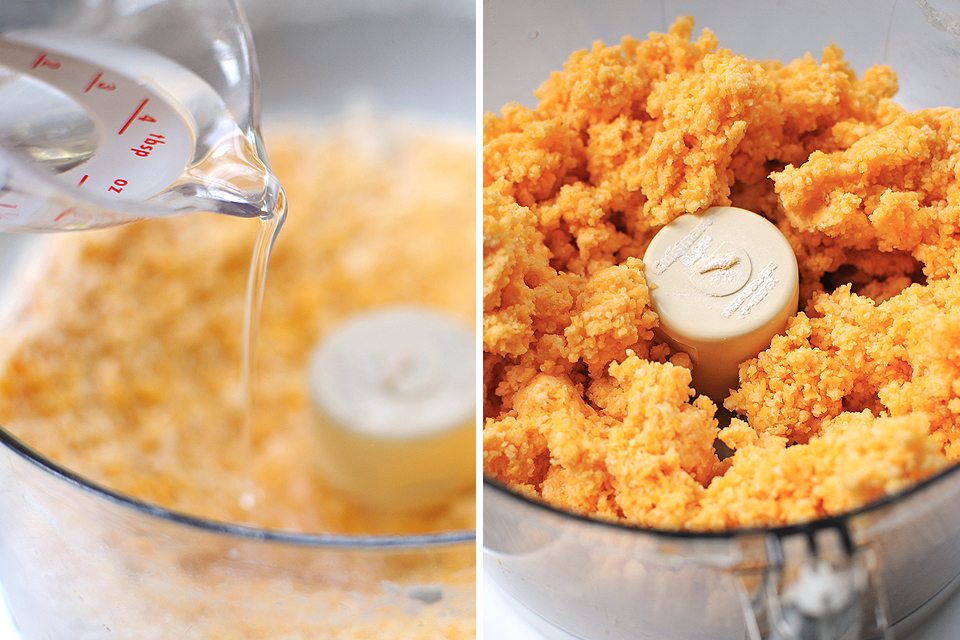
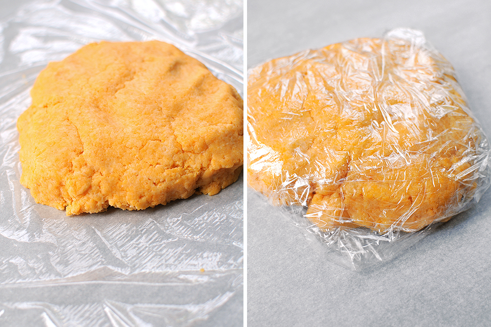
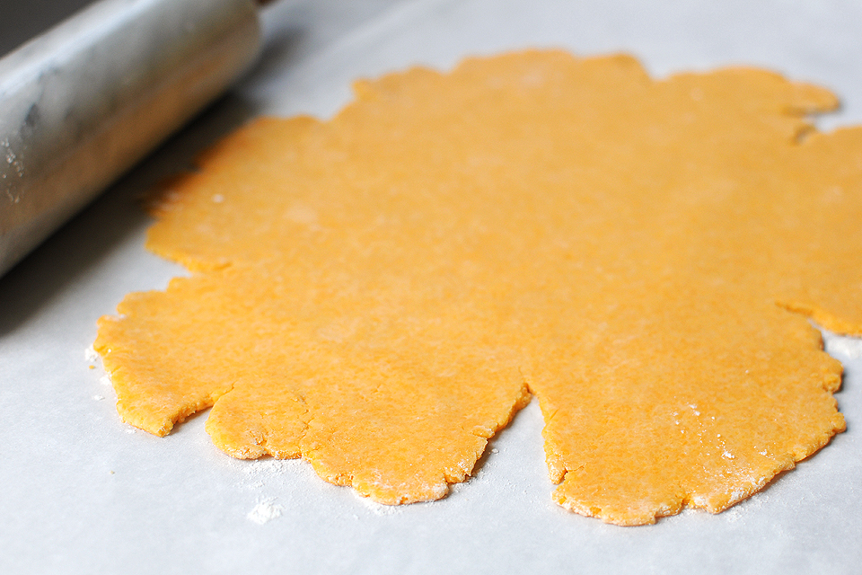
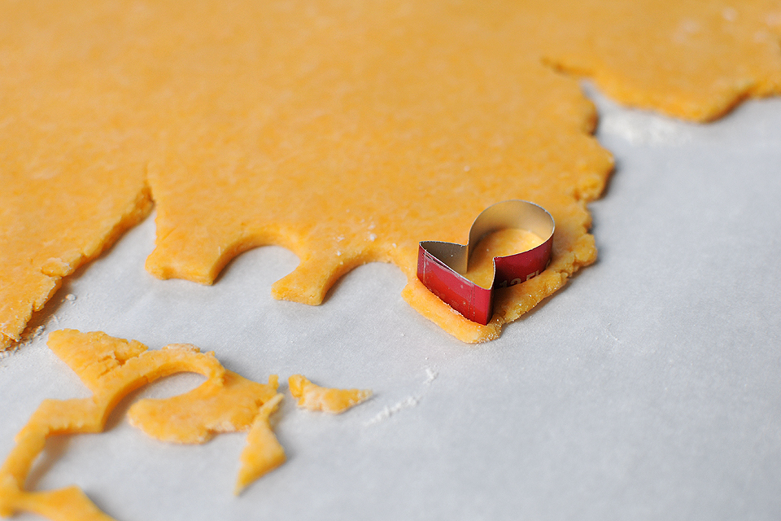
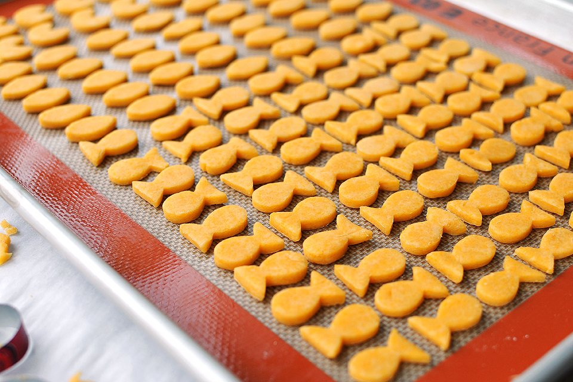
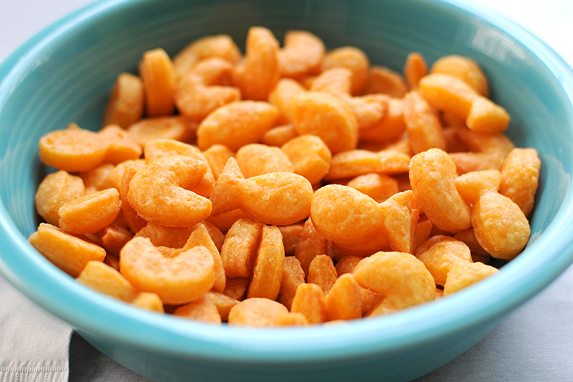

Today, we're going to teach you how to make some delicious cheesy snacks, fun for the whole family.

You will need the following ingredients:

The first step is cutting out the shapes of your crackers from the aluminum can. Cut a thin strip and, then tape the edges together with clear packing tape.

Begin combining everything, except the water, in a food processor until the dough looks like sand.

Next, pulse in the water, 1 tablespoon at a time, until combined.

Remove the dough from the processor and form into a small, tidy package. Wrap in plastic and chill for 20 minutes.

Once chilled, roll out and flatten the dough.


Place crackers on a lined cookie sheet and bake at 350F for about 15 minutes.

And, you're done!
This recipe was lovingly ripped off of The Tasty Kitchen.